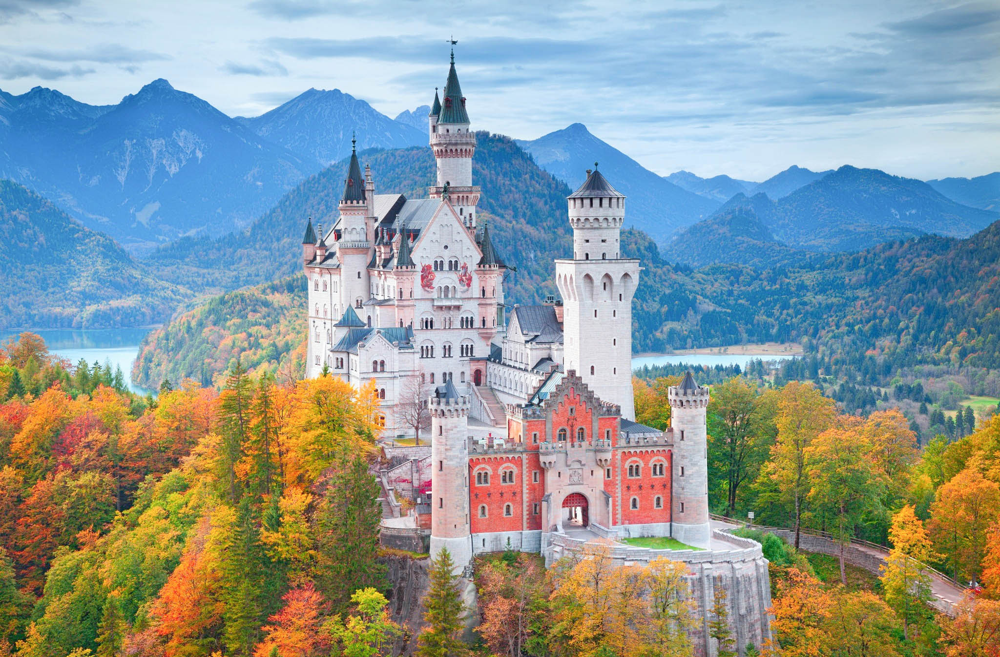
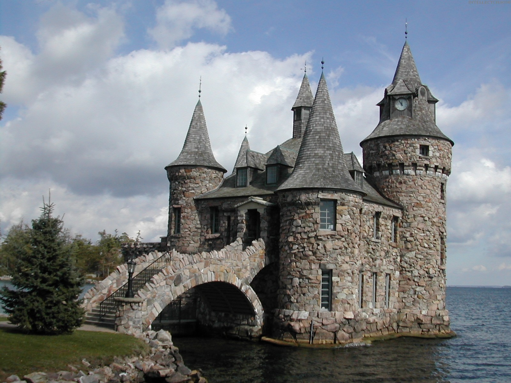
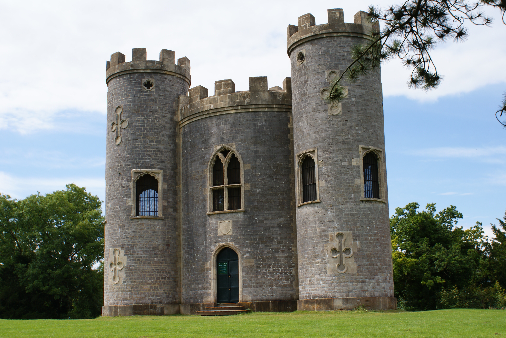
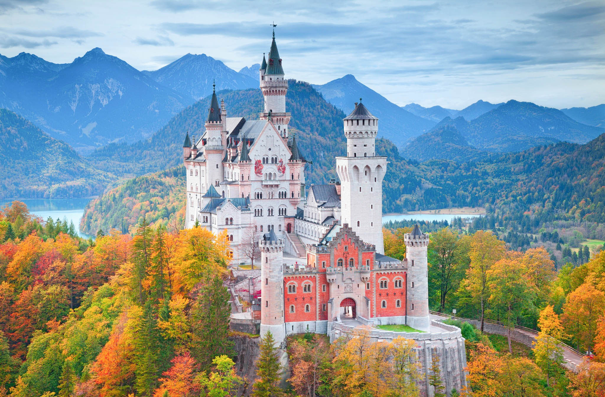
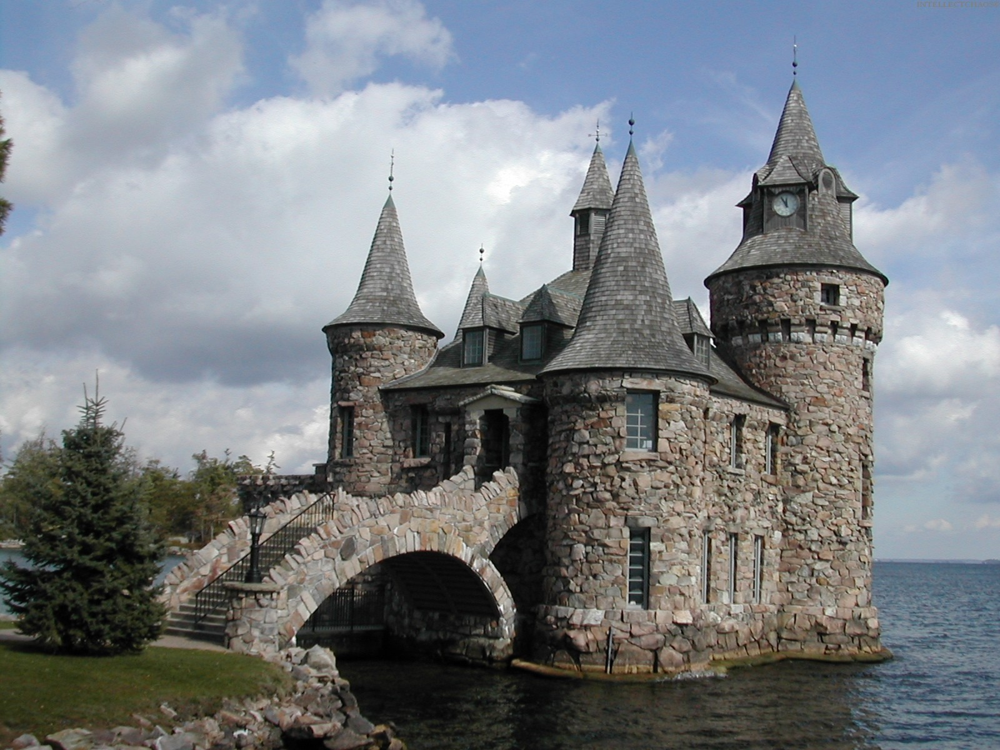
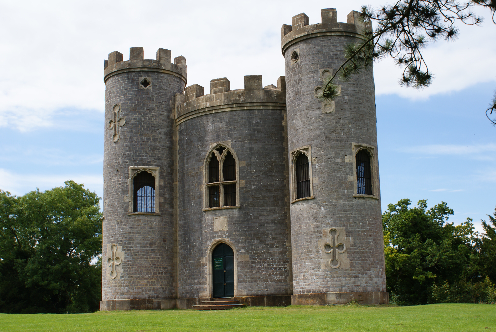

Castle
Lewes, UK
Photo by: Michele Brooks
Built in 1069, the castle has a tremendous view of the town of Lewes and the surrounding countryside.
Other Images by Michele Brooks
|  |  |
|  |  |

Lewes, UK
Photo by: Michele Brooks
Built in 1069, the castle has a tremendous view of the town of Lewes and the surrounding countryside.
|  |  |
|  | |